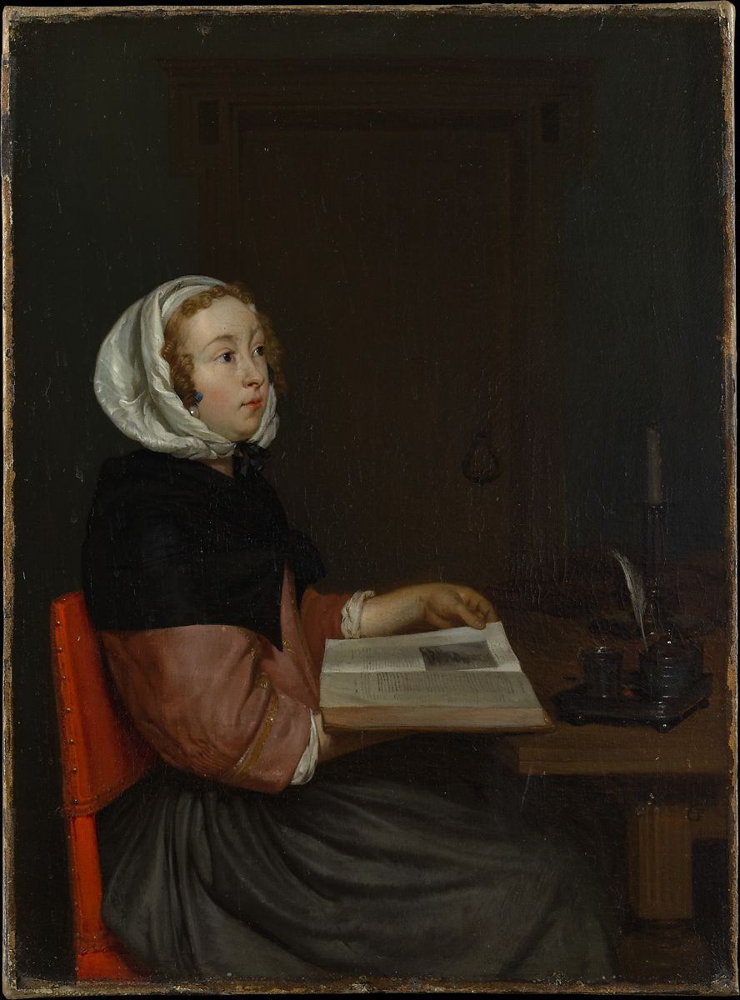

<head>
<meta charset="UTF-8" />
<meta name="keywords" content="drawing, painting" />
<meta name="description" content="drawings by Sunjy" />
<title>Sunjy</title>
<link rel="shortcut icon" type="image/x-icon" href="../../mImages/mCommon/favicon.ico" media="screen" />
<link rel="stylesheet" type="text/css" href="../../mCsses/mCommon/mCssA.css" />
<link rel="stylesheet" type="text/css" href="../../mCsses/mCommon/mCssB.css" />
<link rel="stylesheet" type="text/css" href="../../mCsses/mCommon/mCssC.css" />
<link rel="stylesheet" type="text/css" href="../../mCsses/mCommon/mCssD.css" />
<link rel="stylesheet" type="text/css" href="../../mCsses/mContent/mCssA.css" />
<link rel="stylesheet" type="text/css" href="../../mCsses/mContent/mCssB.css" />
<link rel="stylesheet" type="text/css" href="../../mCsses/mContent/mCssC.css" />
<link rel="stylesheet" type="text/css" href="../../mCsses/mContent/mCssD.css" />
</head>
<script type="text/javascript" src="../../mScripts/mContent/mContentAA.js" /></script>
<script type="text/javascript" src="../../mScripts/mContent/mContentAB.js" /></script>
<script type="text/javascript" src="../../mScripts/mContent/mContentAC.js" /></script>
<script type="text/javascript" src="../../mScripts/mContent/mContentAD.js" /></script>
<script type="text/javascript"></script> 
<script type="text/javascript">
document.write('<div class="mImgAbsolute"></div>');
/*
document.write('<p class="mFontSizeBColor" />From a white paper...</p>');
document.write('<table class="center"><tr><td>');
document.write('');
document.write('</td></tr></table>');
*/
</script>


<script type="text/javascript">
document.write('<p class="mFontSizeBColor" />The Reader</p>');
document.write('<p class="mFontSizeSColor" />By Eglon van der Neer. A young woman looks up from her reading—possibly of an emblem book or illustrated treatise—absorbed in thought or distracted by something unseen. The theme was already well-established in the early 1660s, when this painting was likely made, and in his treatment Van der Neer suggests, in the young woman’s fine but modest attire, the silver writing set and sealing wax, and the extinguished candle (a conventional vanitas symbol), a degree of virtue and cultivation.<br><br>For two centuries, the painting was considered to be by Gerard ter Borch. Though clearly inspired by Ter Borch, the execution is decidedly Van der Neer’s own. The artist’s polished mature style brought him success and noble patronage later in his career.</p>');
document.write('<table class="center" /><tr><td>');
document.write('<br>For two centuries, the painting was considered to be by Gerard ter Borch. Though clearly inspired by Ter Borch, the execution is decidedly Van der Neer’s own. The artist’s polished mature style brought him success and noble patronage later in his career." />');
document.write('</td></tr></table>');
</script>


